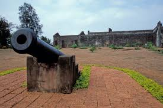
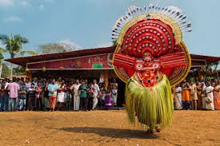
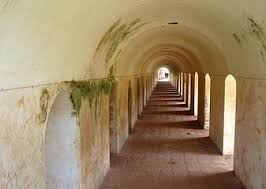

Kannur was an important trading centre in the 12th century, with active business connections with Persia and Arabia. It served as the British military headquarters on India's west coast until 1887. The modern town is referred to as Kannur Town. Kannur, as a district and surrounding areas, were mostly ruled by the famous Kolathiri Rajas (Kings).
St. Angelo Fort was built in 1505 by Dom Francisco de Almeida, the first Portuguese Viceroy of India. The Dutch captured the fort from the Portuguese in 1663. They modernised the fort and built the bastions Hollandia, Zeelandia, and Frieslandia that are the major features of the present structure. The original Portuguese fort was pulled down later. A painting of this fort and the fishing ferry behind it can be seen in the Rijksmuseum Amsterdam. The Dutch sold the fort to king Ali Raja of Arakkal in 1772. During the 17th century, Kannur was the capital city of the only Muslim Sultanate in Kerala, known as Arakkal